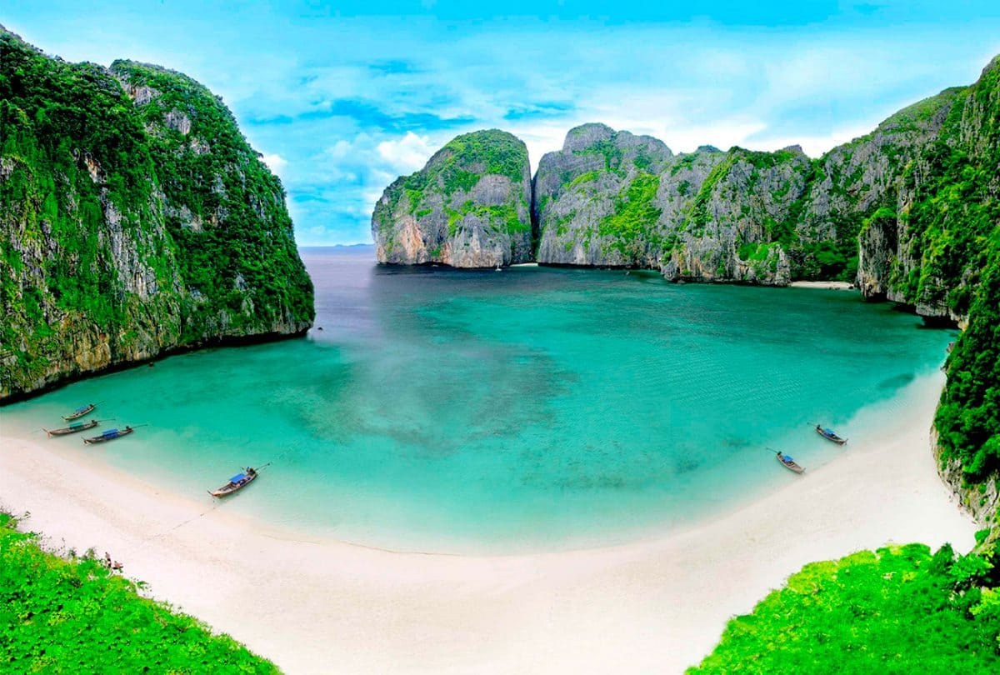
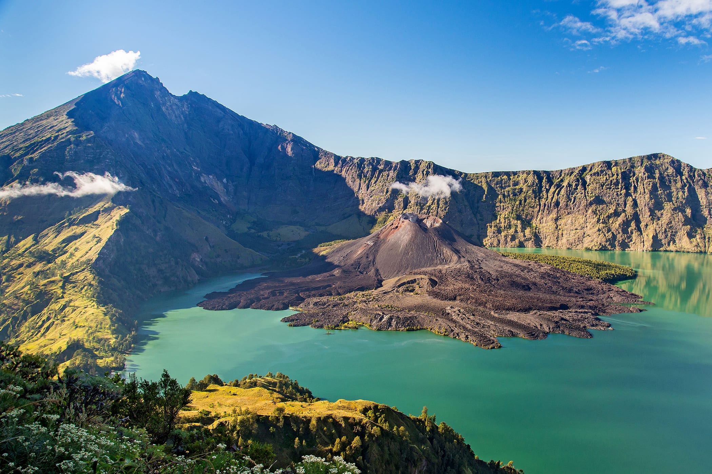
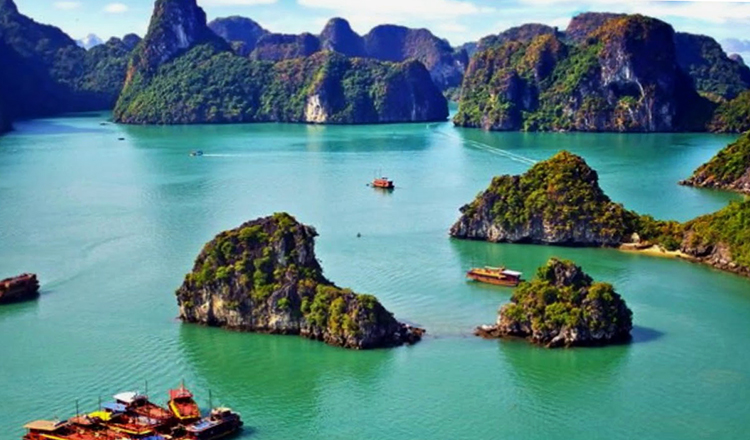
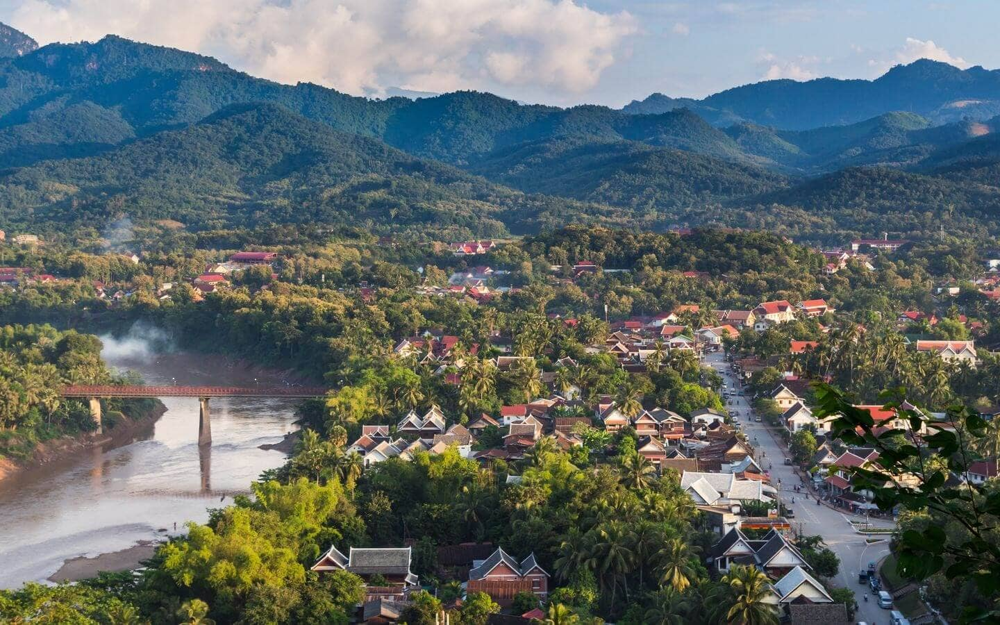

Национальный лесной парк Чжанцзяцзе является одним из самых интересных национальных парков в мире. Этот объект по праву считающийся одним из самых красивых мест на планете, выделяется более чем 3 тыс. огромных столбов из кварцитового песчаника, простирающихся ввысь (около 2600 футов в высоту) до ручьев и густых лесов.
Острова Пхи-Пхи, Таиланд
Хотя эти острова всё больше и больше подвержены угрозе чрезмерной застройки и огромного количества туристов, эти острова по-прежнему являются одними из самых красивых морских пейзажей в Азии. На островах есть пляжи и чистая вода, природные красоты которых защищены статусом национального парка.


Гора Ринджани, Индонезия
Гора Ринджани является действующим вулканом на острове Ломбок. Те, кто совершают поход к вершине во время периода покоя горы, награждаются видом на озеро-кратер и его глубокую голубую воду. Один из наименее развитых островов в Азии, есть только несколько основных туристических мероприятий, которые можно найти в соседней деревне Сенару.
Бухта Халонг, Вьетнам
Жители Вьетнама гордятся этой красивейшей бухтой, которая является одним из 7 современных чудес света и находится под охраной ЮНЕСКО. Она насчитывает около 3000 островов.


Луанг Пхабанг, Лаос
Отправляйтесь в Луанг Прабанг, и вы вернётесь во времени. Этот объект наследия ЮНЕСКО открывает окно в другую эпоху, когда жизнь была медленнее, а большая часть дорожного движения состояла из велосипедов и пеших прогулок. Этот красочный сельский город, окружённый горами и расположенный у слияния Нам-Хана и реки Меконг, в настоящее время является главным туристическим местом Лаоса.